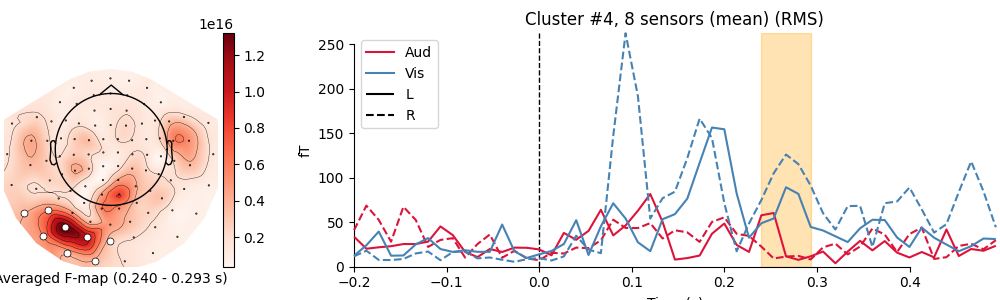

Note
Go to the end to download the full example code.
Spatiotemporal permutation F-test on full sensor data#
Tests for differential evoked responses in at least one condition using a permutation clustering test. The FieldTrip neighbor templates will be used to determine the adjacency between sensors. This serves as a spatial prior to the clustering. Spatiotemporal clusters will then be visualized using custom matplotlib code.
Here, the unit of observation is epochs from a specific study subject. However, the same logic applies when the unit observation is a number of study subject each of whom contribute their own averaged data (i.e., an average of their epochs). This would then be considered an analysis at the “2nd level”.
See the FieldTrip tutorial for a caveat regarding the possible interpretation of “significant†clusters.
For more information on cluster-based permutation testing in MNE-Python, see also: Non-parametric 1 sample cluster statistic on single trial power.
# Authors: Denis Engemann <denis.engemann@gmail.com>
# Jona Sassenhagen <jona.sassenhagen@gmail.com>
# Alex Rockhill <aprockhill@mailbox.org>
# Stefan Appelhoff <stefan.appelhoff@mailbox.org>
#
# License: BSD-3-Clause
# Copyright the MNE-Python contributors.
import matplotlib.pyplot as plt
import numpy as np
import scipy.stats
from mpl_toolkits.axes_grid1 import make_axes_locatable
import mne
from mne.channels import find_ch_adjacency
from mne.datasets import sample
from mne.stats import combine_adjacency, spatio_temporal_cluster_test
from mne.viz import plot_compare_evokeds
Set parameters#
data_path = sample.data_path()
meg_path = data_path / "MEG" / "sample"
raw_fname = meg_path / "sample_audvis_filt-0-40_raw.fif"
event_fname = meg_path / "sample_audvis_filt-0-40_raw-eve.fif"
event_id = {"Aud/L": 1, "Aud/R": 2, "Vis/L": 3, "Vis/R": 4}
tmin = -0.2
tmax = 0.5
# Setup for reading the raw data
raw = mne.io.read_raw_fif(raw_fname, preload=True)
raw.filter(1, 25)
events = mne.read_events(event_fname)
Opening raw data file /home/circleci/mne_data/MNE-sample-data/MEG/sample/sample_audvis_filt-0-40_raw.fif...
Read a total of 4 projection items:
PCA-v1 (1 x 102) idle
PCA-v2 (1 x 102) idle
PCA-v3 (1 x 102) idle
Average EEG reference (1 x 60) idle
Range : 6450 ... 48149 = 42.956 ... 320.665 secs
Ready.
Reading 0 ... 41699 = 0.000 ... 277.709 secs...
Filtering raw data in 1 contiguous segment
Setting up band-pass filter from 1 - 25 Hz
FIR filter parameters
---------------------
Designing a one-pass, zero-phase, non-causal bandpass filter:
- Windowed time-domain design (firwin) method
- Hamming window with 0.0194 passband ripple and 53 dB stopband attenuation
- Lower passband edge: 1.00
- Lower transition bandwidth: 1.00 Hz (-6 dB cutoff frequency: 0.50 Hz)
- Upper passband edge: 25.00 Hz
- Upper transition bandwidth: 6.25 Hz (-6 dB cutoff frequency: 28.12 Hz)
- Filter length: 497 samples (3.310 s)
Read epochs for the channel of interest#
picks = mne.pick_types(raw.info, meg="mag", eog=True)
reject = dict(mag=4e-12, eog=150e-6)
epochs = mne.Epochs(
raw,
events,
event_id,
tmin,
tmax,
picks=picks,
decim=2, # just for speed!
baseline=None,
reject=reject,
preload=True,
)
epochs.drop_channels(["EOG 061"])
epochs.equalize_event_counts(event_id)
# Obtain the data as a 3D matrix and transpose it such that
# the dimensions are as expected for the cluster permutation test:
# n_epochs × n_times × n_channels
X = [epochs[event_name].get_data(copy=False) for event_name in event_id]
X = [np.transpose(x, (0, 2, 1)) for x in X]
Not setting metadata
288 matching events found
No baseline correction applied
Created an SSP operator (subspace dimension = 3)
3 projection items activated
Using data from preloaded Raw for 288 events and 106 original time points (prior to decimation) ...
Rejecting epoch based on EOG : ['EOG 061']
Rejecting epoch based on EOG : ['EOG 061']
Rejecting epoch based on EOG : ['EOG 061']
Rejecting epoch based on EOG : ['EOG 061']
Rejecting epoch based on EOG : ['EOG 061']
Rejecting epoch based on EOG : ['EOG 061']
Rejecting epoch based on EOG : ['EOG 061']
Rejecting epoch based on EOG : ['EOG 061']
Rejecting epoch based on EOG : ['EOG 061']
Rejecting epoch based on EOG : ['EOG 061']
Rejecting epoch based on EOG : ['EOG 061']
Rejecting epoch based on EOG : ['EOG 061']
Rejecting epoch based on EOG : ['EOG 061']
Rejecting epoch based on EOG : ['EOG 061']
Rejecting epoch based on EOG : ['EOG 061']
Rejecting epoch based on MAG : ['MEG 1711']
Rejecting epoch based on EOG : ['EOG 061']
Rejecting epoch based on EOG : ['EOG 061']
Rejecting epoch based on EOG : ['EOG 061']
Rejecting epoch based on EOG : ['EOG 061']
Rejecting epoch based on EOG : ['EOG 061']
Rejecting epoch based on MAG : ['MEG 1711']
Rejecting epoch based on EOG : ['EOG 061']
Rejecting epoch based on EOG : ['EOG 061']
Rejecting epoch based on EOG : ['EOG 061']
Rejecting epoch based on EOG : ['EOG 061']
Rejecting epoch based on EOG : ['EOG 061']
Rejecting epoch based on EOG : ['EOG 061']
Rejecting epoch based on EOG : ['EOG 061']
Rejecting epoch based on EOG : ['EOG 061']
Rejecting epoch based on EOG : ['EOG 061']
Rejecting epoch based on EOG : ['EOG 061']
Rejecting epoch based on EOG : ['EOG 061']
Rejecting epoch based on EOG : ['EOG 061']
Rejecting epoch based on EOG : ['EOG 061']
Rejecting epoch based on EOG : ['EOG 061']
Rejecting epoch based on EOG : ['EOG 061']
Rejecting epoch based on EOG : ['EOG 061']
Rejecting epoch based on EOG : ['EOG 061']
Rejecting epoch based on EOG : ['EOG 061']
Rejecting epoch based on EOG : ['EOG 061']
Rejecting epoch based on EOG : ['EOG 061']
Rejecting epoch based on EOG : ['EOG 061']
Rejecting epoch based on EOG : ['EOG 061']
Rejecting epoch based on EOG : ['EOG 061']
Rejecting epoch based on EOG : ['EOG 061']
Rejecting epoch based on EOG : ['EOG 061']
Rejecting epoch based on EOG : ['EOG 061']
48 bad epochs dropped
Dropped 16 epochs: 50, 51, 84, 93, 95, 96, 129, 146, 149, 154, 158, 195, 201, 203, 211, 212
Find the FieldTrip neighbor definition to setup sensor adjacency#
adjacency, ch_names = find_ch_adjacency(epochs.info, ch_type="mag")
print(type(adjacency)) # it's a sparse matrix!
mne.viz.plot_ch_adjacency(epochs.info, adjacency, ch_names)

Reading adjacency matrix for neuromag306mag.
<class 'scipy.sparse._csr.csr_array'>
Compute permutation statistic#
How does it work? We use clustering to “bind†together features which are similar. Our features are the magnetic fields measured over our sensor array at different times. This reduces the multiple comparison problem. To compute the actual test-statistic, we first sum all F-values in all clusters. We end up with one statistic for each cluster. Then we generate a distribution from the data by shuffling our conditions between our samples and recomputing our clusters and the test statistics. We test for the significance of a given cluster by computing the probability of observing a cluster of that size [1][2].
# We are running an F test, so we look at the upper tail
# see also: https://stats.stackexchange.com/a/73993
tail = 1
# We want to set a critical test statistic (here: F), to determine when
# clusters are being formed. Using Scipy's percent point function of the F
# distribution, we can conveniently select a threshold that corresponds to
# some alpha level that we arbitrarily pick.
alpha_cluster_forming = 0.001
# For an F test we need the degrees of freedom for the numerator
# (number of conditions - 1) and the denominator (number of observations
# - number of conditions):
n_conditions = len(event_id)
n_observations = len(X[0])
dfn = n_conditions - 1
dfd = n_observations - n_conditions
# Note: we calculate 1 - alpha_cluster_forming to get the critical value
# on the right tail
f_thresh = scipy.stats.f.ppf(1 - alpha_cluster_forming, dfn=dfn, dfd=dfd)
# run the cluster based permutation analysis
cluster_stats = spatio_temporal_cluster_test(
X,
n_permutations=1000,
threshold=f_thresh,
tail=tail,
n_jobs=None,
buffer_size=None,
adjacency=adjacency,
)
F_obs, clusters, p_values, _ = cluster_stats
stat_fun(H1): min=0.0033787374718191373 max=207.77535362731717
Running initial clustering …
Found 22 clusters
0%| | Permuting : 0/999 [00:00<?, ?it/s]
1%| | Permuting : 6/999 [00:00<00:05, 177.02it/s]
2%|â– | Permuting : 15/999 [00:00<00:04, 223.25it/s]
2%|â– | Permuting : 24/999 [00:00<00:04, 238.69it/s]
3%|▎ | Permuting : 31/999 [00:00<00:04, 230.40it/s]
4%|â– | Permuting : 38/999 [00:00<00:04, 224.58it/s]
5%|â– | Permuting : 46/999 [00:00<00:04, 226.87it/s]
5%|▌ | Permuting : 53/999 [00:00<00:04, 223.77it/s]
6%|▌ | Permuting : 62/999 [00:00<00:04, 230.25it/s]
7%|▋ | Permuting : 73/999 [00:00<00:03, 243.28it/s]
8%|▊ | Permuting : 84/999 [00:00<00:03, 253.60it/s]
10%|▉ | Permuting : 95/999 [00:00<00:03, 262.07it/s]
11%|█ | Permuting : 106/999 [00:00<00:03, 269.08it/s]
12%|█■| Permuting : 118/999 [00:00<00:03, 278.00it/s]
13%|█▎ | Permuting : 129/999 [00:00<00:03, 282.75it/s]
14%|█■| Permuting : 141/999 [00:00<00:02, 289.63it/s]
15%|█▌ | Permuting : 152/999 [00:00<00:02, 292.90it/s]
16%|█▋ | Permuting : 164/999 [00:00<00:02, 298.37it/s]
18%|█▊ | Permuting : 175/999 [00:00<00:02, 300.74it/s]
19%|█▊ | Permuting : 186/999 [00:00<00:02, 302.82it/s]
20%|█▉ | Permuting : 197/999 [00:00<00:02, 304.66it/s]
21%|██ | Permuting : 209/999 [00:00<00:02, 308.58it/s]
22%|██■| Permuting : 220/999 [00:00<00:02, 309.94it/s]
23%|██▎ | Permuting : 232/999 [00:00<00:02, 313.30it/s]
24%|██■| Permuting : 243/999 [00:00<00:02, 314.28it/s]
25%|██▌ | Permuting : 253/999 [00:00<00:02, 313.11it/s]
26%|██▋ | Permuting : 264/999 [00:00<00:02, 314.05it/s]
28%|██▊ | Permuting : 275/999 [00:00<00:02, 314.91it/s]
29%|██▊ | Permuting : 286/999 [00:00<00:02, 315.66it/s]
30%|██▉ | Permuting : 299/999 [00:00<00:02, 320.21it/s]
31%|███ | Permuting : 310/999 [00:01<00:02, 320.62it/s]
32%|███■| Permuting : 322/999 [00:01<00:02, 322.87it/s]
34%|███▎ | Permuting : 335/999 [00:01<00:02, 326.78it/s]
35%|███■| Permuting : 346/999 [00:01<00:01, 326.78it/s]
36%|███▌ | Permuting : 358/999 [00:01<00:01, 328.57it/s]
37%|███▋ | Permuting : 369/999 [00:01<00:01, 328.30it/s]
38%|███▊ | Permuting : 381/999 [00:01<00:01, 329.96it/s]
39%|███▉ | Permuting : 393/999 [00:01<00:01, 331.51it/s]
41%|████ | Permuting : 405/999 [00:01<00:01, 332.98it/s]
42%|████■| Permuting : 417/999 [00:01<00:01, 334.33it/s]
43%|████▎ | Permuting : 428/999 [00:01<00:01, 333.89it/s]
44%|████■| Permuting : 440/999 [00:01<00:01, 335.17it/s]
45%|████▌ | Permuting : 452/999 [00:01<00:01, 336.35it/s]
46%|████▋ | Permuting : 464/999 [00:01<00:01, 337.48it/s]
48%|████▊ | Permuting : 476/999 [00:01<00:01, 338.54it/s]
49%|████▉ | Permuting : 488/999 [00:01<00:01, 339.51it/s]
50%|█████ | Permuting : 500/999 [00:01<00:01, 340.43it/s]
51%|█████■| Permuting : 512/999 [00:01<00:01, 341.31it/s]
52%|█████■| Permuting : 524/999 [00:01<00:01, 342.13it/s]
54%|█████▎ | Permuting : 536/999 [00:01<00:01, 342.92it/s]
55%|█████■| Permuting : 549/999 [00:01<00:01, 345.27it/s]
56%|█████▌ | Permuting : 560/999 [00:01<00:01, 344.25it/s]
57%|█████▋ | Permuting : 572/999 [00:01<00:01, 344.91it/s]
58%|█████▊ | Permuting : 584/999 [00:01<00:01, 345.53it/s]
60%|█████▉ | Permuting : 597/999 [00:01<00:01, 347.68it/s]
61%|██████ | Permuting : 609/999 [00:01<00:01, 348.12it/s]
62%|██████■| Permuting : 620/999 [00:01<00:01, 346.99it/s]
63%|██████▎ | Permuting : 631/999 [00:01<00:01, 345.91it/s]
64%|██████■| Permuting : 643/999 [00:01<00:01, 346.45it/s]
65%|██████▌ | Permuting : 654/999 [00:01<00:00, 345.38it/s]
67%|██████▋ | Permuting : 667/999 [00:02<00:00, 347.52it/s]
68%|██████▊ | Permuting : 679/999 [00:02<00:00, 348.00it/s]
69%|██████▉ | Permuting : 691/999 [00:02<00:00, 348.43it/s]
70%|███████ | Permuting : 704/999 [00:02<00:00, 350.38it/s]
72%|███████■| Permuting : 716/999 [00:02<00:00, 350.70it/s]
73%|███████▎ | Permuting : 728/999 [00:02<00:00, 350.96it/s]
74%|███████■| Permuting : 740/999 [00:02<00:00, 351.22it/s]
75%|███████▌ | Permuting : 752/999 [00:02<00:00, 351.47it/s]
76%|███████▋ | Permuting : 763/999 [00:02<00:00, 350.20it/s]
78%|███████▊ | Permuting : 775/999 [00:02<00:00, 350.50it/s]
79%|███████▊ | Permuting : 786/999 [00:02<00:00, 349.28it/s]
80%|███████▉ | Permuting : 798/999 [00:02<00:00, 349.64it/s]
81%|████████ | Permuting : 809/999 [00:02<00:00, 348.49it/s]
82%|████████■| Permuting : 820/999 [00:02<00:00, 347.35it/s]
83%|████████▎ | Permuting : 830/999 [00:02<00:00, 344.78it/s]
84%|████████■| Permuting : 842/999 [00:02<00:00, 345.39it/s]
85%|████████▌ | Permuting : 854/999 [00:02<00:00, 345.94it/s]
87%|████████▋ | Permuting : 866/999 [00:02<00:00, 346.48it/s]
88%|████████▊ | Permuting : 878/999 [00:02<00:00, 347.01it/s]
89%|████████▉ | Permuting : 888/999 [00:02<00:00, 344.43it/s]
90%|█████████ | Permuting : 900/999 [00:02<00:00, 345.04it/s]
91%|█████████â–| Permuting : 912/999 [00:02<00:00, 345.62it/s]
92%|█████████â–| Permuting : 924/999 [00:02<00:00, 346.16it/s]
94%|█████████â–| Permuting : 938/999 [00:02<00:00, 349.72it/s]
95%|█████████▌| Permuting : 950/999 [00:02<00:00, 350.08it/s]
96%|█████████▋| Permuting : 962/999 [00:02<00:00, 350.39it/s]
97%|█████████▋| Permuting : 974/999 [00:02<00:00, 350.71it/s]
99%|█████████▊| Permuting : 985/999 [00:02<00:00, 349.48it/s]
100%|█████████▉| Permuting : 997/999 [00:02<00:00, 349.85it/s]
100%|██████████| Permuting : 999/999 [00:02<00:00, 336.64it/s]
Note
Note how we only specified an adjacency for sensors! However,
because we used mne.stats.spatio_temporal_cluster_test(),
an adjacency for time points was automatically taken into
account. That is, at time point N, the time points N - 1 and
N + 1 were considered as adjacent (this is also called “lattice
adjacency”). This is only possible because we ran the analysis on
2D data (times × channels) per observation … for 3D data per
observation (e.g., times × frequencies × channels), we will need
to use mne.stats.combine_adjacency(), as shown further
below.
Note also that the same functions work with source estimates. The only differences are the origin of the data, the size, and the adjacency definition. It can be used for single trials or for groups of subjects.
Visualize clusters#
# We subselect clusters that we consider significant at an arbitrarily
# picked alpha level: "p_accept".
# NOTE: remember the caveats with respect to "significant" clusters that
# we mentioned in the introduction of this tutorial!
p_accept = 0.01
good_cluster_inds = np.where(p_values < p_accept)[0]
# configure variables for visualization
colors = {"Aud": "crimson", "Vis": "steelblue"}
linestyles = {"L": "-", "R": "--"}
# organize data for plotting
evokeds = {cond: epochs[cond].average() for cond in event_id}
# loop over clusters
for i_clu, clu_idx in enumerate(good_cluster_inds):
# unpack cluster information, get unique indices
time_inds, space_inds = np.squeeze(clusters[clu_idx])
ch_inds = np.unique(space_inds)
time_inds = np.unique(time_inds)
# get topography for F stat
f_map = F_obs[time_inds, ...].mean(axis=0)
# get signals at the sensors contributing to the cluster
sig_times = epochs.times[time_inds]
# create spatial mask
mask = np.zeros((f_map.shape[0], 1), dtype=bool)
mask[ch_inds, :] = True
# initialize figure
fig, ax_topo = plt.subplots(1, 1, figsize=(10, 3), layout="constrained")
# plot average test statistic and mark significant sensors
f_evoked = mne.EvokedArray(f_map[:, np.newaxis], epochs.info, tmin=0)
f_evoked.plot_topomap(
times=0,
mask=mask,
axes=ax_topo,
cmap="Reds",
vlim=(np.min, np.max),
show=False,
colorbar=False,
mask_params=dict(markersize=10),
)
image = ax_topo.images[0]
# remove the title that would otherwise say "0.000 s"
ax_topo.set_title("")
# create additional axes (for ERF and colorbar)
divider = make_axes_locatable(ax_topo)
# add axes for colorbar
ax_colorbar = divider.append_axes("right", size="5%", pad=0.05)
plt.colorbar(image, cax=ax_colorbar)
ax_topo.set_xlabel(
"Averaged F-map ({:0.3f} - {:0.3f} s)".format(*sig_times[[0, -1]])
)
# add new axis for time courses and plot time courses
ax_signals = divider.append_axes("right", size="300%", pad=1.2)
title = f"Cluster #{i_clu + 1}, {len(ch_inds)} sensor"
if len(ch_inds) > 1:
title += "s (mean)"
plot_compare_evokeds(
evokeds,
title=title,
picks=ch_inds,
axes=ax_signals,
colors=colors,
linestyles=linestyles,
show=False,
split_legend=True,
truncate_yaxis="auto",
)
# plot temporal cluster extent
ymin, ymax = ax_signals.get_ylim()
ax_signals.fill_betweenx(
(ymin, ymax), sig_times[0], sig_times[-1], color="orange", alpha=0.3
)
plt.show()


- 


combining channels using RMS (mag channels)
combining channels using RMS (mag channels)
combining channels using RMS (mag channels)
combining channels using RMS (mag channels)
combining channels using RMS (mag channels)
combining channels using RMS (mag channels)
combining channels using RMS (mag channels)
combining channels using RMS (mag channels)
combining channels using RMS (mag channels)
combining channels using RMS (mag channels)
combining channels using RMS (mag channels)
combining channels using RMS (mag channels)
combining channels using RMS (mag channels)
combining channels using RMS (mag channels)
combining channels using RMS (mag channels)
combining channels using RMS (mag channels)
combining channels using RMS (mag channels)
combining channels using RMS (mag channels)
combining channels using RMS (mag channels)
combining channels using RMS (mag channels)
combining channels using RMS (mag channels)
combining channels using RMS (mag channels)
combining channels using RMS (mag channels)
combining channels using RMS (mag channels)
combining channels using RMS (mag channels)
combining channels using RMS (mag channels)
combining channels using RMS (mag channels)
combining channels using RMS (mag channels)
Permutation statistic for time-frequencies#
Let’s do the same thing with the time-frequency decomposition of the data (see Frequency and time-frequency sensor analysis for a tutorial and Time-frequency on simulated data (Multitaper vs. Morlet vs. Stockwell vs. Hilbert) for a comparison of time-frequency methods) to show how cluster permutations can be done on higher-dimensional data.
decim = 4
freqs = np.arange(7, 30, 3) # define frequencies of interest
n_cycles = freqs / freqs[0]
epochs_power = list()
for condition in [epochs[k] for k in ("Aud/L", "Vis/L")]:
this_tfr = condition.compute_tfr(
method="morlet",
freqs=freqs,
n_cycles=n_cycles,
decim=decim,
average=False,
return_itc=False,
)
this_tfr.apply_baseline(mode="ratio", baseline=(None, 0))
epochs_power.append(this_tfr.data)
# transpose again to (epochs, frequencies, times, channels)
X = [np.transpose(x, (0, 2, 3, 1)) for x in epochs_power]
Applying baseline correction (mode: ratio)
Applying baseline correction (mode: ratio)
Remember the note on the adjacency matrix from above: For 3D data, as here,
we must use mne.stats.combine_adjacency() to extend the
sensor-based adjacency to incorporate the time-frequency plane as well.
Here, the integer inputs are converted into a lattice and combined with the sensor adjacency matrix so that data at similar times and with similar frequencies and at close sensor locations are clustered together.
# our data at each observation is of shape frequencies × times × channels
tfr_adjacency = combine_adjacency(len(freqs), len(this_tfr.times), adjacency)
Now we can run the cluster permutation test, but first we have to set a threshold. This example decimates in time and uses few frequencies so we need to increase the threshold from the default value in order to have differentiated clusters (i.e., so that our algorithm doesn’t just find one large cluster). For a more principled method of setting this parameter, threshold-free cluster enhancement may be used. See Statistical inference for a discussion.
# This time we don't calculate a threshold based on the F distribution.
# We might as well select an arbitrary threshold for cluster forming
tfr_threshold = 15.0
# run cluster based permutation analysis
cluster_stats = spatio_temporal_cluster_test(
X,
n_permutations=1000,
threshold=tfr_threshold,
tail=1,
n_jobs=None,
buffer_size=None,
adjacency=tfr_adjacency,
)
stat_fun(H1): min=6.752417666025854e-07 max=38.408365559505015
Running initial clustering …
Found 3 clusters
0%| | Permuting : 0/999 [00:00<?, ?it/s]
0%| | Permuting : 3/999 [00:00<00:12, 77.29it/s]
1%| | Permuting : 8/999 [00:00<00:30, 32.92it/s]
1%| | Permuting : 12/999 [00:00<00:22, 43.21it/s]
2%|â– | Permuting : 19/999 [00:00<00:15, 61.78it/s]
2%|â– | Permuting : 23/999 [00:00<00:14, 66.93it/s]
3%|▎ | Permuting : 27/999 [00:00<00:13, 72.03it/s]
3%|▎ | Permuting : 32/999 [00:00<00:12, 79.43it/s]
4%|â– | Permuting : 38/999 [00:00<00:10, 88.56it/s]
4%|â– | Permuting : 41/999 [00:00<00:10, 87.60it/s]
4%|â– | Permuting : 43/999 [00:00<00:11, 84.34it/s]
5%|â– | Permuting : 46/999 [00:00<00:11, 83.73it/s]
5%|â– | Permuting : 49/999 [00:00<00:11, 84.17it/s]
6%|▌ | Permuting : 55/999 [00:00<00:10, 91.30it/s]
6%|▌ | Permuting : 59/999 [00:00<00:10, 91.32it/s]
6%|▌ | Permuting : 62/999 [00:00<00:12, 72.67it/s]
6%|▋ | Permuting : 64/999 [00:00<00:13, 71.91it/s]
7%|▋ | Permuting : 70/999 [00:00<00:11, 77.58it/s]
7%|▋ | Permuting : 72/999 [00:00<00:12, 76.07it/s]
8%|▊ | Permuting : 75/999 [00:00<00:12, 76.17it/s]
8%|▊ | Permuting : 78/999 [00:01<00:12, 76.25it/s]
8%|▊ | Permuting : 81/999 [00:01<00:11, 76.96it/s]
8%|▊ | Permuting : 83/999 [00:01<00:12, 75.44it/s]
9%|▊ | Permuting : 86/999 [00:01<00:12, 75.57it/s]
9%|▉ | Permuting : 91/999 [00:01<00:11, 79.38it/s]
10%|▉ | Permuting : 97/999 [00:01<00:10, 84.52it/s]
10%|▉ | Permuting : 99/999 [00:01<00:12, 71.03it/s]
11%|█ | Permuting : 106/999 [00:01<00:11, 77.13it/s]
11%|█ | Permuting : 109/999 [00:01<00:11, 77.16it/s]
12%|█■| Permuting : 115/999 [00:01<00:10, 81.28it/s]
12%|█■| Permuting : 120/999 [00:01<00:10, 84.30it/s]
13%|█▎ | Permuting : 125/999 [00:01<00:10, 86.48it/s]
13%|█▎ | Permuting : 132/999 [00:01<00:09, 91.32it/s]
14%|█▎ | Permuting : 137/999 [00:01<00:09, 93.27it/s]
14%|█■| Permuting : 144/999 [00:01<00:08, 98.01it/s]
15%|█■| Permuting : 149/999 [00:01<00:08, 100.29it/s]
16%|█▌ | Permuting : 155/999 [00:01<00:08, 103.82it/s]
16%|█▌ | Permuting : 158/999 [00:01<00:08, 102.48it/s]
16%|█▌ | Permuting : 161/999 [00:01<00:08, 101.21it/s]
17%|█▋ | Permuting : 166/999 [00:01<00:08, 103.04it/s]
17%|█▋ | Permuting : 172/999 [00:01<00:07, 106.42it/s]
18%|█▊ | Permuting : 177/999 [00:01<00:07, 108.36it/s]
18%|█▊ | Permuting : 180/999 [00:01<00:07, 106.76it/s]
19%|█▊ | Permuting : 185/999 [00:02<00:08, 93.32it/s]
19%|█▊ | Permuting : 187/999 [00:02<00:08, 91.96it/s]
20%|█▉ | Permuting : 198/999 [00:02<00:07, 101.36it/s]
20%|██ | Permuting : 204/999 [00:02<00:07, 104.49it/s]
21%|██ | Permuting : 207/999 [00:02<00:07, 103.29it/s]
21%|██ | Permuting : 212/999 [00:02<00:07, 105.16it/s]
22%|██■| Permuting : 217/999 [00:02<00:07, 106.31it/s]
22%|██■| Permuting : 220/999 [00:02<00:07, 105.61it/s]
22%|██■| Permuting : 224/999 [00:02<00:07, 105.52it/s]
23%|██▎ | Permuting : 226/999 [00:02<00:07, 102.96it/s]
23%|██▎ | Permuting : 230/999 [00:02<00:07, 103.64it/s]
23%|██▎ | Permuting : 233/999 [00:02<00:07, 102.39it/s]
24%|██▎ | Permuting : 237/999 [00:02<00:07, 103.11it/s]
24%|██■| Permuting : 243/999 [00:02<00:07, 106.34it/s]
24%|██■| Permuting : 244/999 [00:02<00:08, 89.15it/s]
25%|██■| Permuting : 248/999 [00:02<00:08, 89.26it/s]
26%|██▌ | Permuting : 255/999 [00:02<00:07, 93.77it/s]
26%|██▌ | Permuting : 260/999 [00:02<00:07, 95.88it/s]
27%|██▋ | Permuting : 268/999 [00:02<00:07, 100.79it/s]
28%|██▊ | Permuting : 275/999 [00:02<00:06, 104.66it/s]
28%|██▊ | Permuting : 280/999 [00:02<00:06, 106.40it/s]
29%|██▊ | Permuting : 285/999 [00:02<00:06, 108.09it/s]
29%|██▉ | Permuting : 293/999 [00:02<00:06, 112.95it/s]
30%|██▉ | Permuting : 296/999 [00:03<00:06, 111.32it/s]
30%|███ | Permuting : 300/999 [00:03<00:06, 111.65it/s]
30%|███ | Permuting : 302/999 [00:03<00:06, 109.07it/s]
31%|███ | Permuting : 307/999 [00:03<00:06, 110.71it/s]
31%|███ | Permuting : 309/999 [00:03<00:06, 107.92it/s]
31%|███ | Permuting : 311/999 [00:03<00:07, 93.47it/s]
31%|███■| Permuting : 313/999 [00:03<00:07, 92.21it/s]
32%|███■| Permuting : 315/999 [00:03<00:07, 90.55it/s]
32%|███■| Permuting : 318/999 [00:03<00:07, 89.99it/s]
32%|███■| Permuting : 322/999 [00:03<00:07, 91.11it/s]
33%|███▎ | Permuting : 327/999 [00:03<00:07, 93.35it/s]
33%|███▎ | Permuting : 330/999 [00:03<00:07, 92.66it/s]
34%|███▎ | Permuting : 337/999 [00:03<00:06, 97.00it/s]
34%|███■| Permuting : 342/999 [00:03<00:06, 99.06it/s]
35%|███▌ | Permuting : 353/999 [00:03<00:06, 107.58it/s]
36%|███▌ | Permuting : 357/999 [00:03<00:05, 108.06it/s]
36%|███▌ | Permuting : 359/999 [00:03<00:06, 105.45it/s]
36%|███▌ | Permuting : 360/999 [00:03<00:07, 90.77it/s]
37%|███▋ | Permuting : 367/999 [00:03<00:06, 95.09it/s]
37%|███▋ | Permuting : 370/999 [00:03<00:06, 94.35it/s]
38%|███▊ | Permuting : 375/999 [00:03<00:06, 96.41it/s]
38%|███▊ | Permuting : 378/999 [00:03<00:06, 95.60it/s]
38%|███▊ | Permuting : 382/999 [00:04<00:06, 96.50it/s]
39%|███▉ | Permuting : 388/999 [00:04<00:06, 99.68it/s]
40%|███▉ | Permuting : 396/999 [00:04<00:05, 104.46it/s]
40%|████ | Permuting : 402/999 [00:04<00:05, 107.38it/s]
41%|████ | Permuting : 408/999 [00:04<00:05, 110.22it/s]
41%|████ | Permuting : 412/999 [00:04<00:05, 109.92it/s]
42%|████■| Permuting : 415/999 [00:04<00:05, 109.10it/s]
42%|████■| Permuting : 421/999 [00:04<00:05, 111.94it/s]
43%|████▎ | Permuting : 426/999 [00:04<00:05, 112.73it/s]
43%|████▎ | Permuting : 432/999 [00:04<00:04, 114.32it/s]
44%|████■| Permuting : 442/999 [00:04<00:04, 121.13it/s]
45%|████■| Permuting : 448/999 [00:04<00:04, 122.70it/s]
45%|████▌ | Permuting : 454/999 [00:04<00:04, 125.03it/s]
46%|████▌ | Permuting : 455/999 [00:04<00:05, 107.13it/s]
46%|████▌ | Permuting : 457/999 [00:04<00:05, 105.30it/s]
46%|████▌ | Permuting : 462/999 [00:04<00:05, 106.93it/s]
46%|████▋ | Permuting : 464/999 [00:04<00:05, 104.84it/s]
47%|████▋ | Permuting : 469/999 [00:04<00:04, 106.55it/s]
47%|████▋ | Permuting : 474/999 [00:04<00:04, 108.20it/s]
48%|████▊ | Permuting : 477/999 [00:04<00:04, 106.81it/s]
48%|████▊ | Permuting : 482/999 [00:04<00:04, 108.49it/s]
49%|████▊ | Permuting : 486/999 [00:04<00:04, 108.26it/s]
49%|████▉ | Permuting : 490/999 [00:04<00:04, 108.71it/s]
49%|████▉ | Permuting : 492/999 [00:04<00:04, 106.40it/s]
50%|████▉ | Permuting : 497/999 [00:04<00:04, 108.15it/s]
50%|█████ | Permuting : 503/999 [00:05<00:04, 111.08it/s]
51%|█████ | Permuting : 508/999 [00:05<00:04, 111.96it/s]
51%|█████■| Permuting : 513/999 [00:05<00:04, 97.34it/s]
52%|█████■| Permuting : 519/999 [00:05<00:04, 100.30it/s]
52%|█████■| Permuting : 521/999 [00:05<00:04, 98.54it/s]
53%|█████▎ | Permuting : 525/999 [00:05<00:04, 99.31it/s]
53%|█████▎ | Permuting : 531/999 [00:05<00:04, 102.32it/s]
54%|█████▎ | Permuting : 535/999 [00:05<00:04, 102.38it/s]
54%|█████■| Permuting : 538/999 [00:05<00:04, 101.27it/s]
54%|█████■| Permuting : 544/999 [00:05<00:04, 103.66it/s]
55%|█████■| Permuting : 549/999 [00:05<00:04, 105.43it/s]
55%|█████▌ | Permuting : 551/999 [00:05<00:04, 103.12it/s]
56%|█████▌ | Permuting : 558/999 [00:05<00:04, 106.84it/s]
56%|█████▋ | Permuting : 563/999 [00:05<00:04, 108.53it/s]
57%|█████▋ | Permuting : 568/999 [00:05<00:03, 109.38it/s]
58%|█████▊ | Permuting : 575/999 [00:05<00:04, 97.61it/s]
58%|█████▊ | Permuting : 577/999 [00:05<00:04, 96.26it/s]
58%|█████▊ | Permuting : 584/999 [00:05<00:04, 99.74it/s]
59%|█████▉ | Permuting : 587/999 [00:05<00:04, 98.30it/s]
60%|█████▉ | Permuting : 598/999 [00:05<00:03, 106.63it/s]
60%|██████ | Permuting : 601/999 [00:06<00:03, 105.41it/s]
61%|██████ | Permuting : 605/999 [00:06<00:03, 105.92it/s]
61%|██████ | Permuting : 609/999 [00:06<00:03, 106.43it/s]
62%|██████■| Permuting : 617/999 [00:06<00:03, 110.94it/s]
62%|██████■| Permuting : 622/999 [00:06<00:03, 112.40it/s]
63%|██████▎ | Permuting : 625/999 [00:06<00:03, 110.22it/s]
63%|██████▎ | Permuting : 630/999 [00:06<00:03, 111.73it/s]
63%|██████▎ | Permuting : 632/999 [00:06<00:03, 109.02it/s]
63%|██████▎ | Permuting : 634/999 [00:06<00:03, 94.58it/s]
64%|██████▎ | Permuting : 636/999 [00:06<00:03, 93.30it/s]
64%|██████■| Permuting : 641/999 [00:06<00:03, 95.30it/s]
64%|██████■| Permuting : 643/999 [00:06<00:03, 93.61it/s]
65%|██████■| Permuting : 648/999 [00:06<00:03, 95.65it/s]
66%|██████▌ | Permuting : 657/999 [00:06<00:03, 101.51it/s]
66%|██████▋ | Permuting : 662/999 [00:06<00:03, 103.29it/s]
67%|██████▋ | Permuting : 666/999 [00:06<00:03, 102.72it/s]
68%|██████▊ | Permuting : 678/999 [00:06<00:02, 112.42it/s]
68%|██████▊ | Permuting : 682/999 [00:06<00:02, 111.38it/s]
69%|██████▉ | Permuting : 687/999 [00:06<00:02, 112.84it/s]
69%|██████▉ | Permuting : 693/999 [00:06<00:02, 115.41it/s]
70%|██████▉ | Permuting : 699/999 [00:06<00:02, 117.92it/s]
71%|███████ | Permuting : 705/999 [00:06<00:02, 120.34it/s]
71%|███████ | Permuting : 708/999 [00:06<00:02, 118.39it/s]
71%|███████■| Permuting : 712/999 [00:06<00:02, 118.43it/s]
71%|███████■| Permuting : 714/999 [00:06<00:02, 115.76it/s]
72%|███████■| Permuting : 718/999 [00:07<00:02, 101.16it/s]
72%|███████■| Permuting : 722/999 [00:07<00:02, 101.25it/s]
73%|███████▎ | Permuting : 729/999 [00:07<00:02, 104.17it/s]
73%|███████▎ | Permuting : 734/999 [00:07<00:02, 105.17it/s]
74%|███████■| Permuting : 738/999 [00:07<00:02, 105.70it/s]
74%|███████■| Permuting : 743/999 [00:07<00:02, 107.33it/s]
75%|███████■| Permuting : 746/999 [00:07<00:02, 106.18it/s]
75%|███████▌ | Permuting : 751/999 [00:07<00:02, 107.82it/s]
75%|███████▌ | Permuting : 753/999 [00:07<00:02, 105.49it/s]
76%|███████▌ | Permuting : 755/999 [00:07<00:02, 103.09it/s]
76%|███████▋ | Permuting : 762/999 [00:07<00:02, 106.61it/s]
77%|███████▋ | Permuting : 770/999 [00:07<00:02, 111.49it/s]
78%|███████▊ | Permuting : 775/999 [00:07<00:01, 112.99it/s]
78%|███████▊ | Permuting : 783/999 [00:07<00:01, 117.77it/s]
79%|███████▉ | Permuting : 790/999 [00:07<00:01, 120.68it/s]
79%|███████▉ | Permuting : 791/999 [00:07<00:02, 103.78it/s]
79%|███████▉ | Permuting : 794/999 [00:07<00:01, 102.80it/s]
80%|███████▉ | Permuting : 798/999 [00:07<00:01, 102.79it/s]
80%|████████ | Permuting : 800/999 [00:07<00:01, 100.61it/s]
81%|████████ | Permuting : 807/999 [00:07<00:01, 104.07it/s]
81%|████████■| Permuting : 812/999 [00:07<00:01, 105.39it/s]
82%|████████■| Permuting : 818/999 [00:08<00:01, 108.19it/s]
82%|████████■| Permuting : 824/999 [00:08<00:01, 110.92it/s]
83%|████████▎ | Permuting : 829/999 [00:08<00:01, 112.41it/s]
83%|████████▎ | Permuting : 830/999 [00:08<00:01, 108.94it/s]
84%|████████■| Permuting : 839/999 [00:08<00:01, 114.59it/s]
84%|████████■| Permuting : 843/999 [00:08<00:01, 114.78it/s]
85%|████████■| Permuting : 846/999 [00:08<00:01, 113.09it/s]
85%|████████■| Permuting : 849/999 [00:08<00:01, 95.30it/s]
85%|████████▌ | Permuting : 851/999 [00:08<00:01, 93.55it/s]
86%|████████▌ | Permuting : 856/999 [00:08<00:01, 95.51it/s]
86%|████████▌ | Permuting : 861/999 [00:08<00:01, 96.91it/s]
87%|████████▋ | Permuting : 869/999 [00:08<00:01, 101.36it/s]
87%|████████▋ | Permuting : 872/999 [00:08<00:01, 100.93it/s]
88%|████████▊ | Permuting : 875/999 [00:08<00:01, 99.63it/s]
89%|████████▉ | Permuting : 887/999 [00:08<00:01, 109.22it/s]
89%|████████▉ | Permuting : 893/999 [00:08<00:00, 111.84it/s]
90%|████████▉ | Permuting : 898/999 [00:08<00:00, 113.26it/s]
91%|█████████ | Permuting : 910/999 [00:08<00:00, 121.81it/s]
92%|█████████â–| Permuting : 915/999 [00:08<00:00, 121.98it/s]
93%|█████████▎| Permuting : 928/999 [00:08<00:00, 132.31it/s]
94%|█████████â–| Permuting : 937/999 [00:08<00:00, 136.85it/s]
95%|█████████â–| Permuting : 945/999 [00:09<00:00, 121.64it/s]
95%|█████████â–| Permuting : 948/999 [00:09<00:00, 119.89it/s]
95%|█████████▌| Permuting : 953/999 [00:09<00:00, 120.91it/s]
96%|█████████▌| Permuting : 959/999 [00:09<00:00, 122.98it/s]
96%|█████████▌| Permuting : 961/999 [00:09<00:00, 120.46it/s]
97%|█████████▋| Permuting : 966/999 [00:09<00:00, 121.50it/s]
97%|█████████▋| Permuting : 969/999 [00:09<00:00, 119.74it/s]
98%|█████████▊| Permuting : 978/999 [00:09<00:00, 124.59it/s]
98%|█████████▊| Permuting : 982/999 [00:09<00:00, 124.39it/s]
99%|█████████▊| Permuting : 986/999 [00:09<00:00, 123.49it/s]
99%|█████████▉| Permuting : 991/999 [00:09<00:00, 124.47it/s]
100%|█████████▉| Permuting : 998/999 [00:09<00:00, 127.39it/s]
100%|██████████| Permuting : 999/999 [00:09<00:00, 105.71it/s]
Finally, we can plot our results. It is difficult to visualize clusters in time-frequency-sensor space; plotting time-frequency spectrograms and plotting topomaps display time-frequency and sensor space respectively but they are difficult to combine. We will plot topomaps with the clustered sensors colored in white adjacent to spectrograms in order to provide a visualization of the results. This is a dimensionally limited view, however. Each sensor has its own significant time-frequencies, but, in order to display a single spectrogram, all the time-frequencies that are significant for any sensor in the cluster are plotted as significant. This is a difficulty inherent to visualizing high-dimensional data and should be taken into consideration when interpreting results.
F_obs, clusters, p_values, _ = cluster_stats
good_cluster_inds = np.where(p_values < p_accept)[0]
for i_clu, clu_idx in enumerate(good_cluster_inds):
# unpack cluster information, get unique indices
freq_inds, time_inds, space_inds = clusters[clu_idx]
ch_inds = np.unique(space_inds)
time_inds = np.unique(time_inds)
freq_inds = np.unique(freq_inds)
# get topography for F stat
f_map = F_obs[freq_inds].mean(axis=0)
f_map = f_map[time_inds].mean(axis=0)
# get signals at the sensors contributing to the cluster
sig_times = epochs.times[time_inds]
# initialize figure
fig, ax_topo = plt.subplots(1, 1, figsize=(10, 3), layout="constrained")
# create spatial mask
mask = np.zeros((f_map.shape[0], 1), dtype=bool)
mask[ch_inds, :] = True
# plot average test statistic and mark significant sensors
f_evoked = mne.EvokedArray(f_map[:, np.newaxis], epochs.info, tmin=0)
f_evoked.plot_topomap(
times=0,
mask=mask,
axes=ax_topo,
cmap="Reds",
vlim=(np.min, np.max),
show=False,
colorbar=False,
mask_params=dict(markersize=10),
)
image = ax_topo.images[0]
# create additional axes (for ERF and colorbar)
divider = make_axes_locatable(ax_topo)
# add axes for colorbar
ax_colorbar = divider.append_axes("right", size="5%", pad=0.05)
plt.colorbar(image, cax=ax_colorbar)
ax_topo.set_xlabel(
"Averaged F-map ({:0.3f} - {:0.3f} s)".format(*sig_times[[0, -1]])
)
# remove the title that would otherwise say "0.000 s"
ax_topo.set_title("")
# add new axis for spectrogram
ax_spec = divider.append_axes("right", size="300%", pad=1.2)
title = f"Cluster #{i_clu + 1}, {len(ch_inds)} spectrogram"
if len(ch_inds) > 1:
title += " (max over channels)"
F_obs_plot = F_obs[..., ch_inds].max(axis=-1)
F_obs_plot_sig = np.zeros(F_obs_plot.shape) * np.nan
F_obs_plot_sig[tuple(np.meshgrid(freq_inds, time_inds))] = F_obs_plot[
tuple(np.meshgrid(freq_inds, time_inds))
]
for f_image, cmap in zip([F_obs_plot, F_obs_plot_sig], ["gray", "autumn"]):
c = ax_spec.imshow(
f_image,
cmap=cmap,
aspect="auto",
origin="lower",
extent=[epochs.times[0], epochs.times[-1], freqs[0], freqs[-1]],
)
ax_spec.set_xlabel("Time (ms)")
ax_spec.set_ylabel("Frequency (Hz)")
ax_spec.set_title(title)
# add another colorbar
ax_colorbar2 = divider.append_axes("right", size="5%", pad=0.05)
plt.colorbar(c, cax=ax_colorbar2)
ax_colorbar2.set_ylabel("F-stat")
# clean up viz
plt.show()


Exercises#
References#
Total running time of the script: (0 minutes 20.523 seconds)